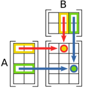
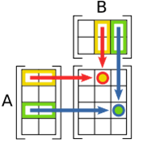

Multiplying Matices
you can only do so if...the # of columns in $A$ = the #of rows in $b$
$\table [\table 2, 3], [\table 2; 4], =, [16]; 1x2, 2x1,=, 1x1$
$\table [\table 1, 3, 2], [\table 1, 0; 2, 4; 5, 1;],=,[\table 17, 14];
1x3, 3x2,=, 1x2$
$\table [\table 2, 5, 1; 4, 3, 1\],[\table 1, 0, 0; 0, 2, 0; 2, 3, 1],=,[\table 4, 13, 1; 6, 9, 1]; 2x3, 3x3,=, 2x3$
To find $AB$, multiply elements of each row in $A$ by elements of each column in $B$ & add the products


ex) Given $A=[\table 3, 0; 1, 1; 5, 2]$ & $B=[\table 4, 7; 6, 8]$, find $AB$
$\table AB=[\table 3, 0; 1, 1; 5, 2] ∙ [\table 4, 7; 6, 8;], =, [\table 3(4)+0(6), 3(7)+0(8); 1(4)+1(6), 1(7)+1(8); 5(4)+2(6), 5(7)+2(8)]; ,=,[\table 12, 21; 10, 15; 32, 51]$
$\table AB=[\table 3, 0; 1, 1; 5, 2] ∙ [\table 4, 7; 6, 8;], =, [\table 3(4)+0(6), 3(7)+0(8); 1(4)+1(6), 1(7)+1(8); 5(4)+2(6), 5(7)+2(8)]; ,=,[\table 12, 21; 10, 15; 32, 51]$
Homework Video